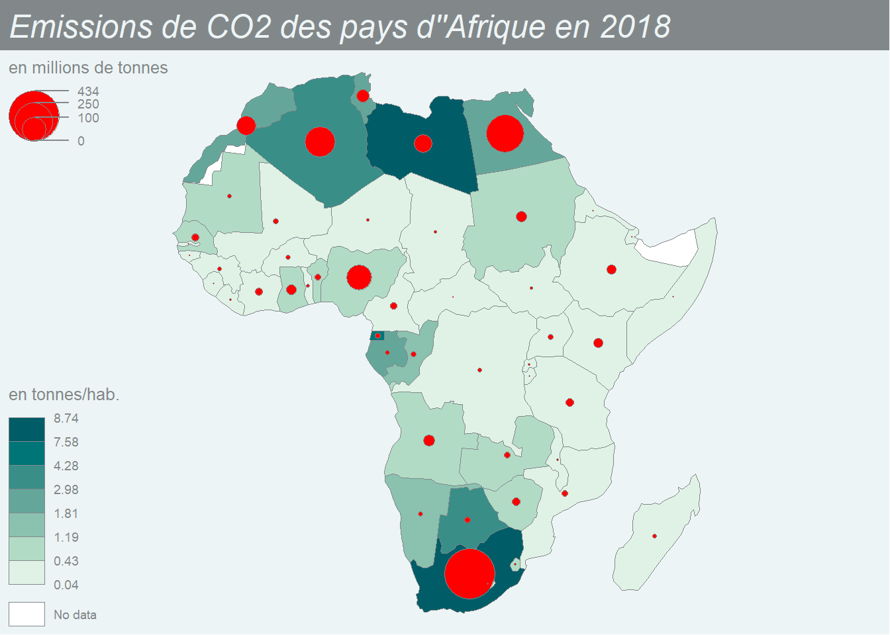

Les objets suivants sont masqués depuis 'package:stats':
filter, lag
Les objets suivants sont masqués depuis 'package:base':
intersect, setdiff, setequal, union
library(jsonlite)# Data packageslibrary(wbstats)
Warning: le package 'wbstats' a été compilé avec la version R 4.2.2
library(rnaturalearth)
Warning: le package 'rnaturalearth' a été compilé avec la version R 4.2.2
# Packages cartographiqueslibrary(sf)
Linking to GEOS 3.9.1, GDAL 3.4.3, PROJ 7.2.1; sf_use_s2() is TRUE
library(geojsonsf)library(mapsf)
L’importation et l’exportation de données spatiales peut se faire de différentes manières qui sont illustrées dans trois exemples. L’important est d’aboutir à un fichier de type sf (spatial features) combinant les données géométriques et les données statistiques dans un seul objet. Une fois créé, cet obet sera stocké au format interne de R (.RDS).
Importation d’un shapefile
Carte au format shapefile
Beaucoup de fonds de cartes sont stockés au format shapefile, utilisé dans les systèmes d’information géographiques (SIG). Un shapefile se compose en réalité de trois ou quatre fichiers correspondant la géométrie (fic.shp), à la projection (fic.prj), aux données attributaires (fic.dbf), etc..
On charge le fonds de carte au format shapefile avec la fonction st_read() du package sf. On ne lui indique que le nom du fichier de géométrie et il lit automatiquement les autres.
map<-st_read("carto/europe88/euro1988_map.shp")
Reading layer `euro1988_map' from data source
`C:\git\datamining2023\carto\europe88\euro1988_map.shp' using driver `ESRI Shapefile'
Simple feature collection with 25 features and 1 field
Geometry type: MULTIPOLYGON
Dimension: XY
Bounding box: xmin: 680158.7 ymin: 576113.9 xmax: 5609069 ymax: 4991631
Projected CRS: ETRS89-extended / LCC Europe
Le fichier est au format sf qui est le format cartographique de R. Il comporte une colonne spéciale appelée geometry.
class(map)
[1] "sf" "data.frame"
head(map)
Simple feature collection with 6 features and 1 field
Geometry type: MULTIPOLYGON
Dimension: XY
Bounding box: xmin: 3496766 ymin: 1525952 xmax: 5448053 ymax: 2758691
Projected CRS: ETRS89-extended / LCC Europe
ISO3 geometry
1 ALB MULTIPOLYGON (((4777759 184...
2 AUT MULTIPOLYGON (((4494160 246...
3 BEL MULTIPOLYGON (((3728385 267...
4 BGR MULTIPOLYGON (((5260441 208...
5 CHE MULTIPOLYGON (((3968843 232...
6 CSK MULTIPOLYGON (((4327916 268...
On peut visualiser la carte enb effectuant un plot de la colonne geometry :
Nous allons essayer de constituer une carte des émissions de CO2 par habitant des pays d’Afrique en 2018 basée sur la combinaison des données wbstats et du fonds de carte naturalearth.
Importation du fonds de carte
On charge le fonds de carte countries110du package rnaturalearth et on en extrait les pays africains ainsi que deux ou trois variables utiles. On utilise la commande st_as_sf()pour passer le fonds de carte du format sp (ancien) au format sf (actuel).
Notre carte n’est pas projetée actuellement (les coordonnées sont en latitude et longitude). On modifie son “Coordinate Reference System” pour obtenir des coordonnées planes permettant de calculer des distances.
Warning in format_wb_country(country, cache = cache): The following country
values are not valid and are being excluded from the request: ESH,NA
kable(head(df))
iso2c
iso3c
country
date
EN.ATM.CO2E.KT
SP.POP.TOTL
AO
AGO
Angola
2018
23960
31273533
BI
BDI
Burundi
2018
690
11493472
BJ
BEN
Benin
2018
7420
11940683
BF
BFA
Burkina Faso
2018
4670
20392723
BW
BWA
Botswana
2018
7310
2451409
CF
CAF
Central African Republic
2018
230
5094780
Nous renommons les variables pour avoir un tableau plus simple ou la population est en millions d’habitants, les émissions de CO2 en millions de tonnes. On y ajoute l’intensité des émissions en tonnes par habitant.
don <-df %>%select(iso3 = iso3c, POP = SP.POP.TOTL, CO2 = EN.ATM.CO2E.KT) %>%mutate(POP = POP/1000000, CO2 = CO2/1000, CO2_hab = CO2/POP)kable(head(don),digits =2)
iso3
POP
CO2
CO2_hab
AGO
31.27
23.96
0.77
BDI
11.49
0.69
0.06
BEN
11.94
7.42
0.62
BFA
20.39
4.67
0.23
BWA
2.45
7.31
2.98
CAF
5.09
0.23
0.05
Jointure
Puisque les fichiers comportent un même identifiant et un seul, on peut effectuer la jointure avec la fonction left_join() du package dplyr.
mapdon <-left_join(map,don) %>%st_as_sf()
Joining, by = "iso3"
kable(head(mapdon))
iso3
name
subregion
POP
CO2
CO2_hab
geometry
AGO
Angola
Middle Africa
31.273533
23.96
0.7661430
MULTIPOLYGON (((1988450 -66…
BDI
Burundi
Eastern Africa
11.493472
0.69
0.0600341
MULTIPOLYGON (((3530045 -55…
BEN
Benin
Western Africa
11.940683
7.42
0.6214050
MULTIPOLYGON (((465897.1 69…
BFA
Burkina Faso
Western Africa
20.392723
4.67
0.2290033
MULTIPOLYGON (((-140403.2 1…
BWA
Botswana
Southern Africa
2.451409
7.31
2.9819585
MULTIPOLYGON (((2941565 -22…
CAF
Central African Rep.
Middle Africa
5.094780
0.23
0.0451442
MULTIPOLYGON (((1865230 839…
Essai de cartographie
On réalise ici une belle carte avec le package mapsf qui sera expliqué plus loin
library(mapsf)mf_theme("agolalight")mapdon %>%mf_map("CO2_hab", "choro",breaks="jenks",leg_pos="bottomleft",leg_title ="en tonnes/hab.")%>%mf_map("CO2", inches =0.2,"prop",col="red",leg_pos ="topleft",leg_title ="en millions de tonnes")mf_title("Emissions de CO2 des pays d''Afrique en 2018")

Sauvegarde du fichier sf
saveRDS(mapdon,"carto/africa/africa_sf.RDS")
Importation au format GEOJSON
La plupart des API permettent de récupérer directement des fichiers combinant les données statistiques et cartographiques au format GEOJSON. Il suffit alors de les convertir au format sf en une seule opération, sans avoir besoin d’effectuer de jointure.
Récupération d’un fichier GEOJSON
On commence par repérer une url permettant de récupérer un fichier de type GeoJSON. Puis on récupère le fichier et on l’enregistre à l’aide de la fonction dowload.file() en lui donnat l’extension .geojson. Ce fichier pourra être utilisé dans d’autres langages de programmation comme Python.
On convertit le fichier geojson au format sf à l’aide de la fonction geojson_sf()du package geojsonsf. On vérifie que le fichier est bien de la bonne classe